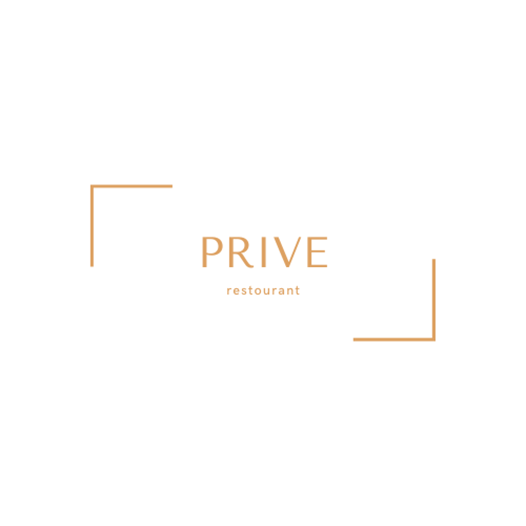
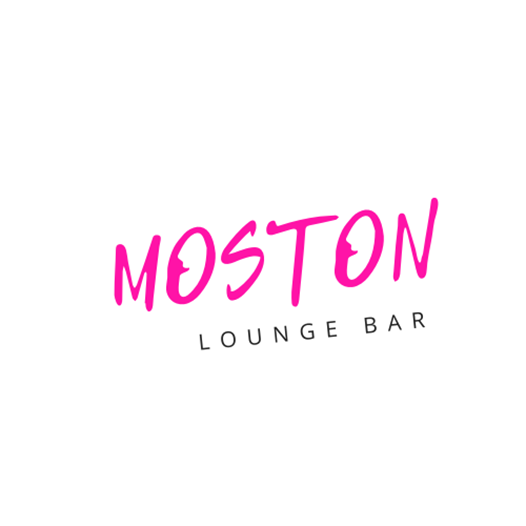

Chatbot in WhatsApp for a network of beauty salons, allowing to automate the flow of clients from the site and direct to the address of the salon, which is located closest.
Clients, in turn, get the contacts of the salon of interest and can, if necessary, switch to a chat with the administrator of the salon.
The administrators can read the entire correspondence and answer the client on behalf of the bot or by personal phone number.

A laconic website for a Turkish cuisine restaurant in central Istanbul. The main objective was to
increase the flow of weekend visitors to the city, including foreigners. Our team developed a
table booking form and menu in several world languages, which had a positive impact on guest
numbers and increased the loyalty of regular visitors.
To attract clients interested in buying/renting property through the international real estate
agency Floors, advertising campaigns were launched to generate leads by collecting
applications within Facebook and Instagram, and campaigns were launched to attract a targeted
audience to the website. The offer to receive a catalogue with a personal selection of the best
house projects for 2022 was used as promotional offers.

Comprehensive development for a chain of restaurants in Abu Dhabi focused on outreach advertising
campaigns to attract locals and international guests, targeting audiences to increase bookings on
evening event days. Contextual advertising and social media promotion (Facebook, Instagram) were
used to promote party and corporate event services. Developed scripts for communication between
the catering staff and guests of the restaurant increased the number of regular visitors.

New World real estate agency in Dubai has formed a goal to attract clients to buy real estate (apartments) for investment, profit (from 10% ready) and diversification of funds through advertising on Instagram and Facebook.
We tested more than 30 advertising creatives, identified the 6 most profitable bundles with which we conducted a / b tests, and then scaled them.
A month after the start of the work we collected the retargeting base, launched ads and got cheaper leads than from cold ads, we were also able to catch up the audience that left.
It was found through experience that simple photos with minimal text on the picture worked best.
The CRM has reduced the number of unprocessed requests from potential clients, developed and
automated the system of touching regular clients (text messages, appointment reminders, etc.).
The CRM system displays all calls and applications from the website or social networks, allowing
you to calculate an indicator such as LTV (total revenue the company receives from one client for
the entire period of cooperation with him). This has increased the transparency of all staff and
ensured a high customer return.